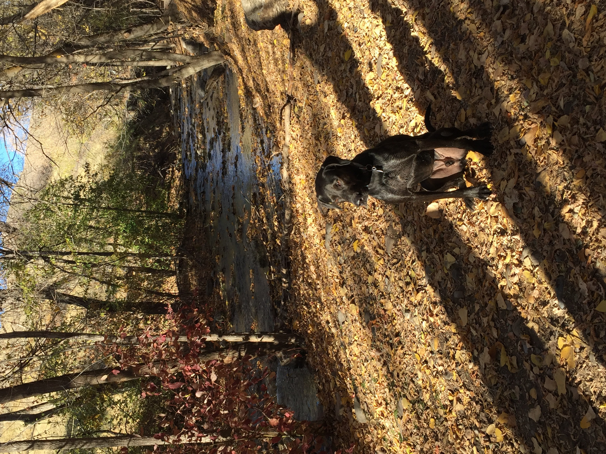

Freedom Trail
Memory Grove Park is located just
north of downtown SLC. The Freedom Trail is within the park’s
boundaries
and is one of Niko’s favorite off-leash hikes. It has a year-round stream, perfect for swimming and
cooling
off in the summer. It is a relatively easy 2-mile out and back hike that follows the stream.
You will encounter many off leash dogs and their humans all year round.
Trailhead Information
- Distance from the South parking lot: 2 miles RT + more for exploring
- Elevation gain: 400 ft
- Dog friendly? Yes. There is a designated off leash space for dogs
- Kid friendly? Yes, be aware that the dogs are off leash and they come in all sizes
- Fees? None
Trailhead Information